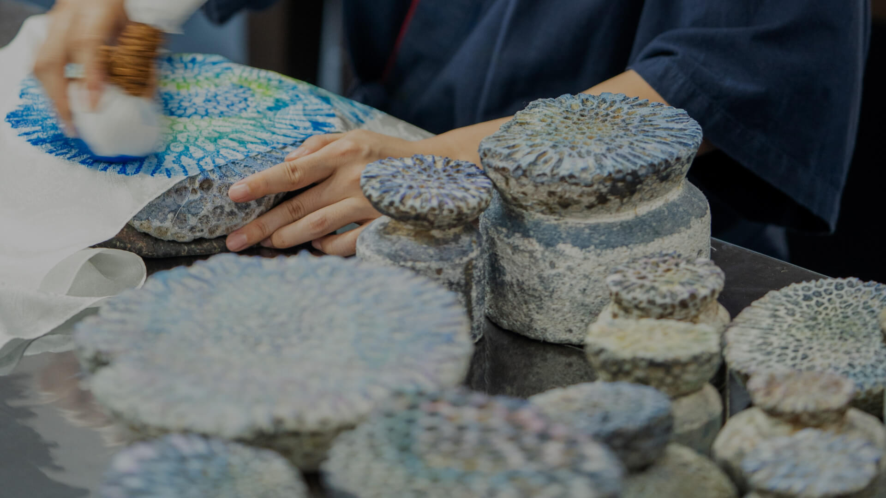
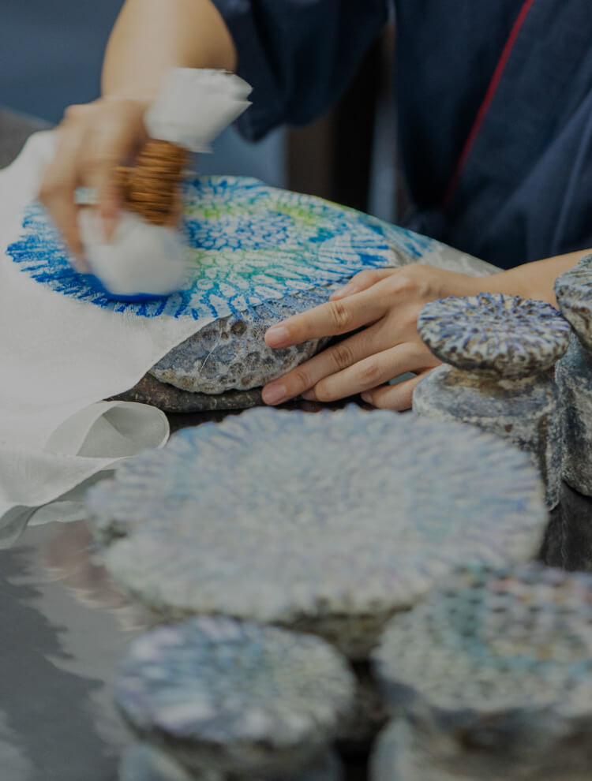
こころみ
HERITAGE AND
THE SPIRIT OF CRAFTSMANSHIP
CRAFTSMANSHIP紅型と珊瑚染め「首里琉染」
沖縄那覇市・首里の魅力を伝える工房
歴史と文化が息づく地でのおもてなし
-
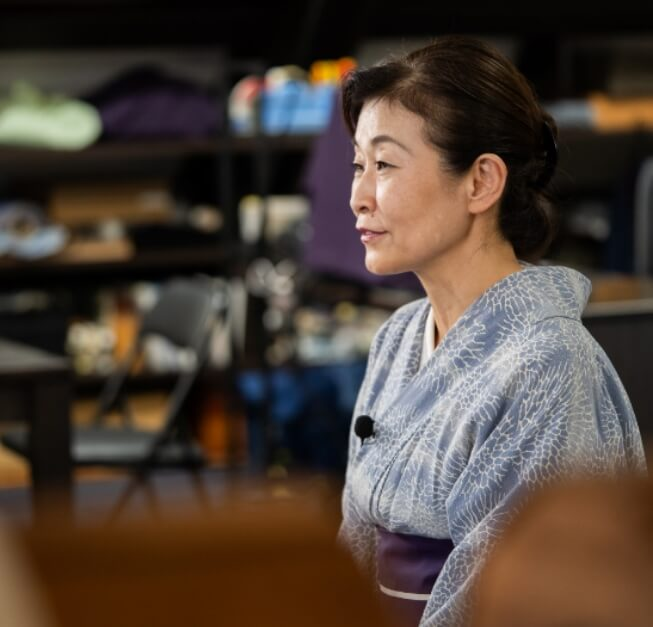
-
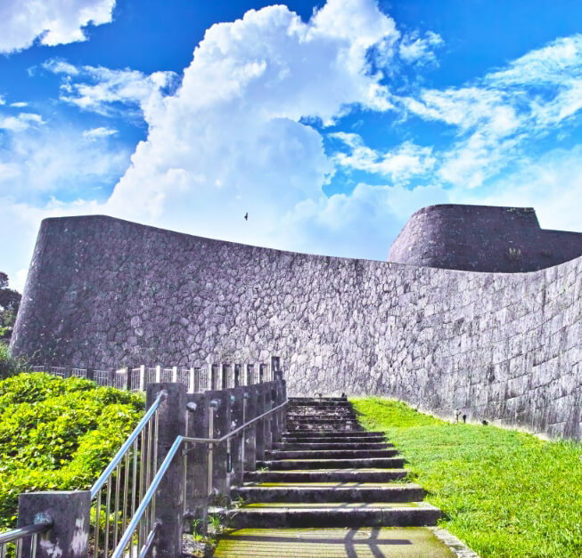
image photo
首里琉染は、首里城から徒歩5分の場所に位置し、訪れる人々に沖縄の豊かな歴史と文化を感じてもらえる場所です。首里は那覇とは異なり、ゆったりとした厳かな雰囲気が漂い、王様が眠る玉陵（たまうどん）も近くにあります。京都出身の私にとっても、首里はどこか懐かしさを感じさせる特別な場所です。
この地に足を運んでいただければ、首里独特の歴史的な雰囲気をじっくりと味わうことができます。私たちの工房では、首里の魅力と調和しながら、訪れる方々に沖縄ならではのおもてなしを心がけています。歴史の中に息づく伝統とともに、首里琉染はこの地で訪れるすべての方々に特別な体験を提供します。
NEWS & TOPICS
New Release in Okinawa Area
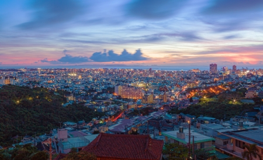

- ・（仮称）那覇市壷川プロジェクト
- ・（仮称）那覇市安里プロジェクト
当社は、2024年4月に沖縄支店を開設しております。沖縄県内においては2023年にゆいレール「壷川」駅から徒歩4分の場所に事業用地を取得.さらに2024年7月に那覇市安里において新規事業用地の取得を行いましたのでお知らせいたします。
今後も那覇の特性を活かし、沖縄エリアでの事業展開を進めてまいります。
会員様には、最新情報や
特別な商談機会をいち早くお届けします。
首里琉染
紅型復興と伝統技術の拠点

首里琉染は、1973年に首里城近くの首里エリアで設立されました。当時、沖縄が復帰した直後の沖縄では、戦後に流入した合成染料の影響で紅型の色落ちが深刻な問題となっていました。これを受け、紅型の復興と染色技術の伝承を目的に、日本の染織協会の阿野会長の指導のもと、先代が首里琉染を創立しました。
首里琉染は、沖縄初の草木染紅型研究所として、植物染料の研究や染色技術の指導を行い、紅型の復興に大きく貢献しました。また、独自の「サンゴ染め」も開発し、サンゴの化石を使った唯一無二の染色技法として高く評価されています。現在も、多くの観光客が首里琉染を訪れ、染色体験や工房見学を楽しんでいます。
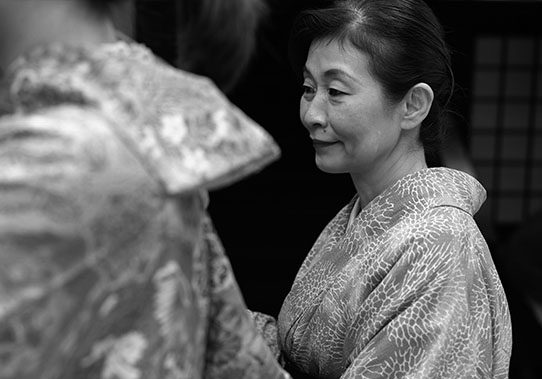
首里琉染 代表取締役社長
大城 裕美（おおしろ ひろみ）
1965年生まれ 京都出身 2児の母。19歳に来沖、沖縄の方と結婚。
・沖縄首里ロータリークラブ 青少年奉仕委員長
・浦添ロータリークラブ パスト会長
・沖縄首里女性活動ロータリー衛星クラブ 議長エレクト
・那覇商工会議所女性会 副会長
・首里振興会 副理事長
・NPO法人首里まちづくり研究会 顧問
・琉染流きもの着付け教室 師範
色彩を通して、生活空間やあなたにピッタリのカラーをお教えします！
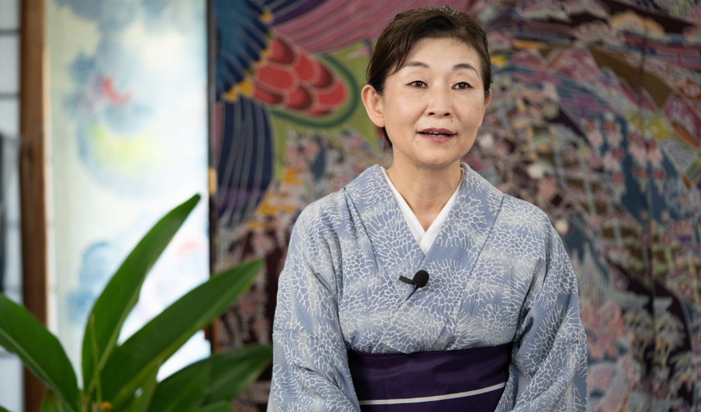
首里琉染の革新と伝統のこころみ
「自然が紡ぐ唯一無二の染め技法」
首里琉染では、紅型とともに、独自の「珊瑚染め」という染色技法が特に際立っています。この技法は、沖縄の石垣島白保で台風により打ち上げられたサンゴからインスピレーションを受けたもので、サンゴの化石を使い、自然が生み出す美しい模様をそのままにデザインへと昇華させています。首里琉染の珊瑚染めは、その特別さと希少性から、多くの人々に愛され、選ばれ続けているのです。
-
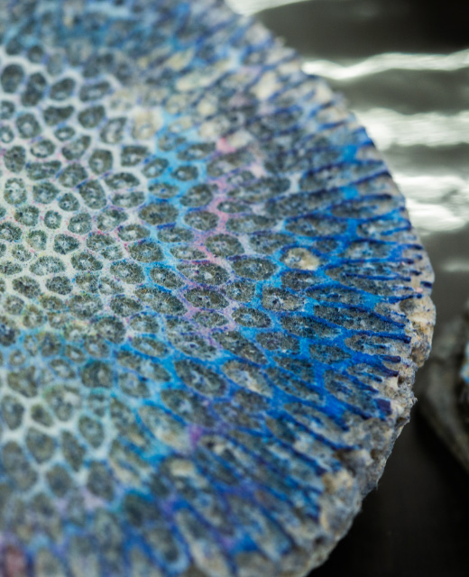
-
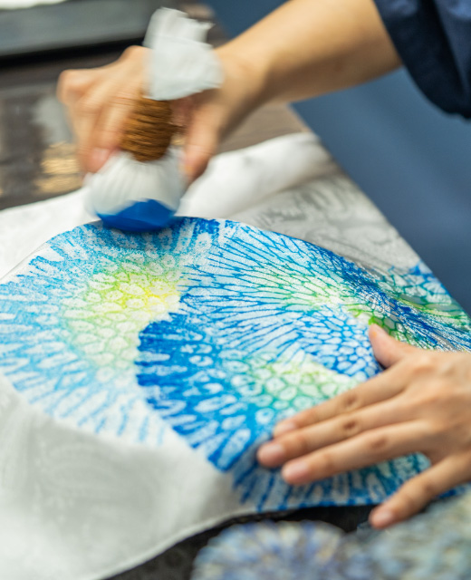
また、首里琉染は、時代に合わせた色彩やデザインを巧みに取り入れ、住空間に自然と調和するアイテムや色彩の提案しています。伝統の技術を大切にしながらも、常に新しい発見と改良を重ねることで、時代に合わせた製品を生み出し、お客様に寄り添ったものづくりを続けています。首里琉染のアイテムは、ただの染物ではなく、空間を彩り、日常に特別な瞬間をもたらす存在として、これからも歩みを続けていきます。
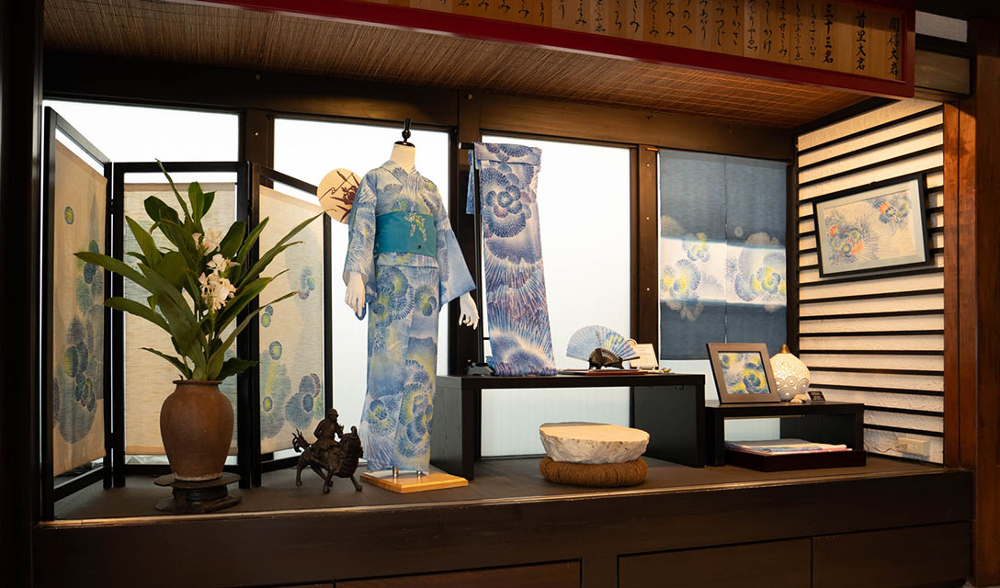
首里琉染に受け継がれる想い、
伝統と革新の原動力
首里琉染が今もなお、その伝統を守り続ける背景には、先代から受け継がれた強い使命感があります。先代の山岡古都は、沖縄の紅型復興に生涯を捧げ、その厳しい指導のもとで多くの職人たちが育ちました。娘である大城裕美氏は、19歳で京都から来沖し、父の偉大さと染物への情熱に触れ、その思いを継ぐ決意を固めました。
琉染は、沖縄の入り口として、訪れる人々に沖縄の美しさと心を伝える役割を果たしています。厳しい環境の中で培った技術と精神は、今や大城氏の中で根付き、地元や観光客を温かく迎え入れる「おもてなし」の心として生き続けています。
-
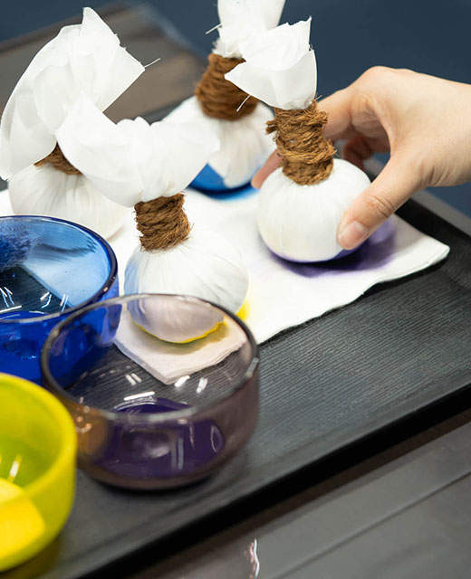
-
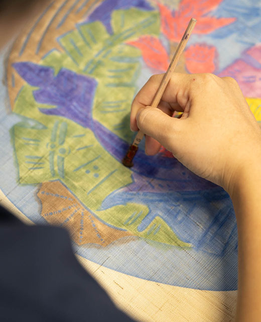
琉染は、沖縄の入り口として、訪れる人々に沖縄の美しさと心を伝える役割を果たしています。厳しい環境の中で培った技術と精神は、今や大城氏の中で根付き、地元や観光客を温かく迎え入れる「おもてなし」の心として生き続けています。
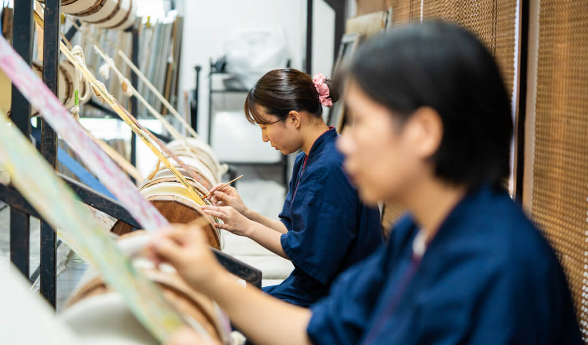
首里琉染が紡ぐ
おもてなしの心と未来への展望
首里琉染は、首里城から歩いてわずか5分の場所に位置し、沖縄の伝統を守り続ける誇りを胸に、地元の方々や観光客を温かく迎え入れています。観光地としても魅力的な首里の地で、琉染はただ商品を提供するだけでなく、おもてなしの心を大切にし、お客様に喜んでいただける企業であり続けることを目指しています。
-
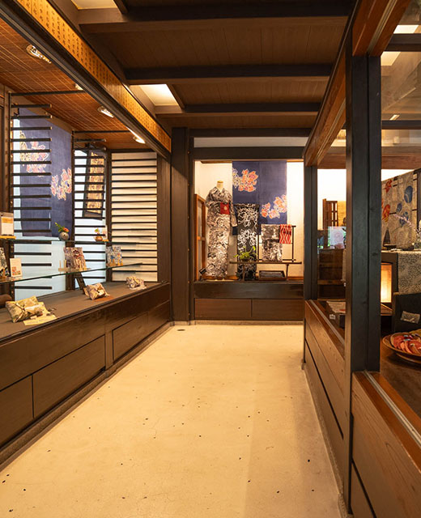
-
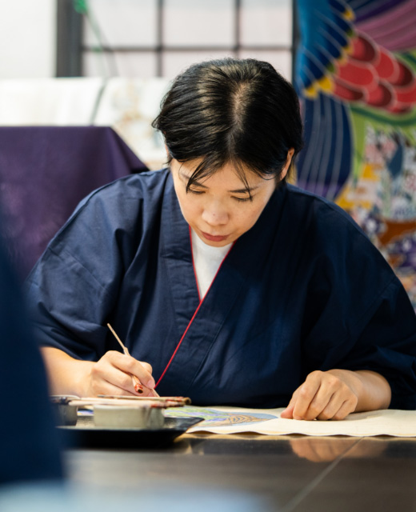
近年、首里琉染は海外からの観光客も多く受け入れており、体験スペースでは多くの方が染物の魅力を楽しんでいます。今後は、空間や色彩に関するアドバイスを通じて、お客様に寄り添った商品作りを進めていく予定です。特に、珊瑚染めの持つ深い意味や、紅型に込められた伝統的な意匠を活かした商品を提案し、大切な方への贈り物としての価値を高めていく考えです。
また、先代が手掛けた古代染めの生地を使い、日常で気軽に楽しめる洋服や小物の企画も進行中です。首里琉染は、これからも伝統を守りながら新たな価値を創造し、沖縄の魅力を国内外に広め続けていくことでしょう。
環境への配慮と
地域貢献への琉染のこころみ
-
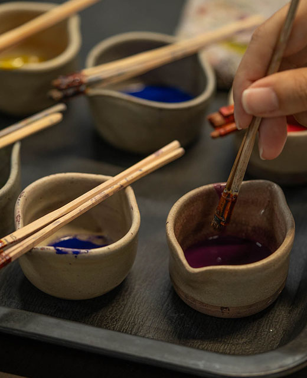
-
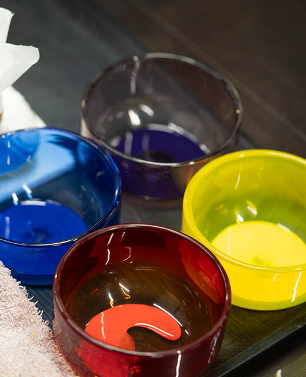
首里琉染では、沖縄の豊かな自然環境を守るため、様々な環境保護活動に取り組んでいます。ロータリークラブに所属し、山や海に囲まれた沖縄の生態系を守る活動として、地域での花植えや海岸のゴミ拾いなどを行っています。特に珊瑚の保護には力を入れており、環境に優しい染料の使用や、家庭から出る洗剤の影響を最小限に抑えるための工夫を施しています。
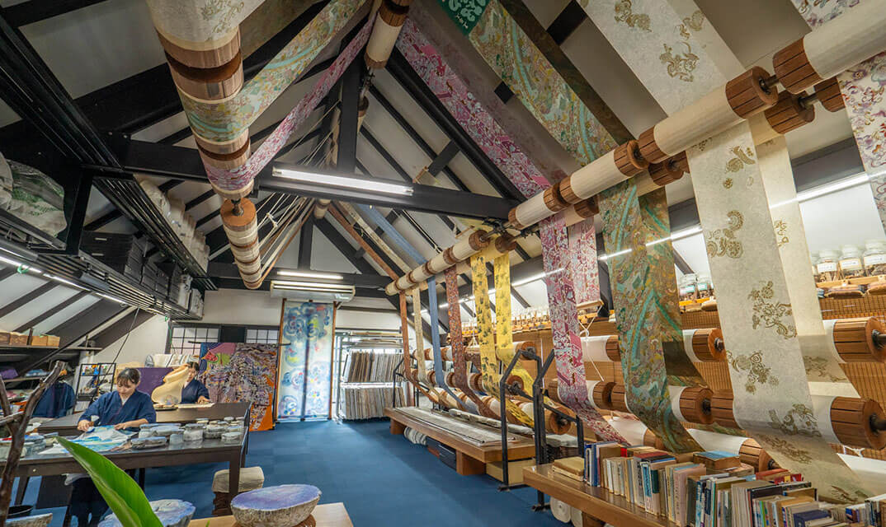
こうした取り組みの一環として、久高島の海ブドウ養殖で使用されている環境に優しい製品にも注目。生活排水が海に流れる中でも、珊瑚が健やかに成長していることにインスピレーションを受け、琉染でも同様の取り組みを進めています。琉染は、これからも環境に配慮した製品作りを続け、自然との共生を大切にしていきます。
環境に優しい染色技術と
色彩の力とエスコンへの共鳴
-
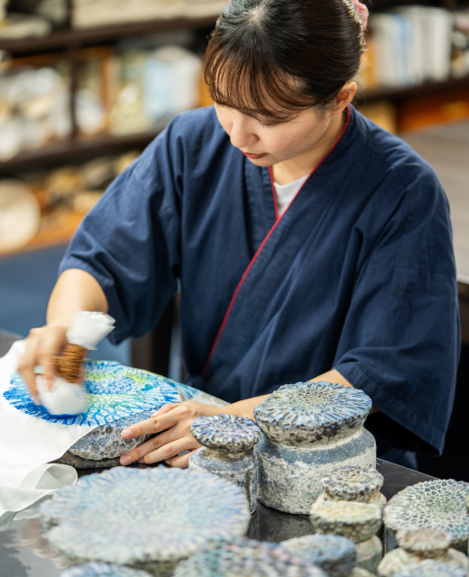
-
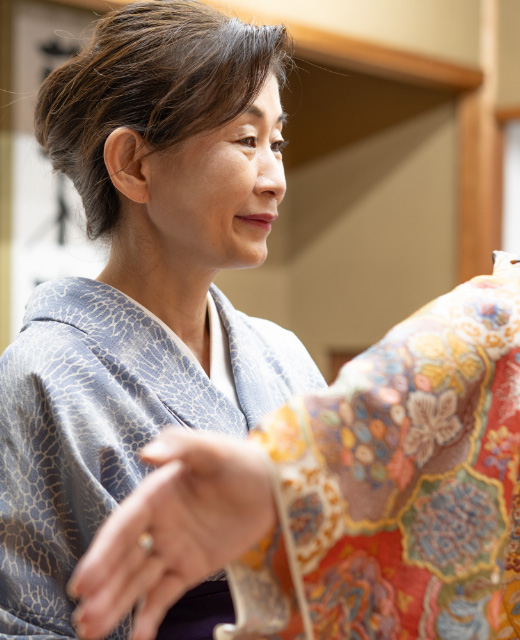
首里琉染では、環境に配慮した染料を使用し、染物を制作しています。配管を通じて海に流れる排水が環境を汚染しないよう、SDGsの観点からも染色工程を見直し、環境への影響を最小限に抑える取り組みを行っています。さらに、琉染が提案する染物は、ただ美しいだけでなく、空間に飾ることでその場に安らぎと健康をもたらすとされています。
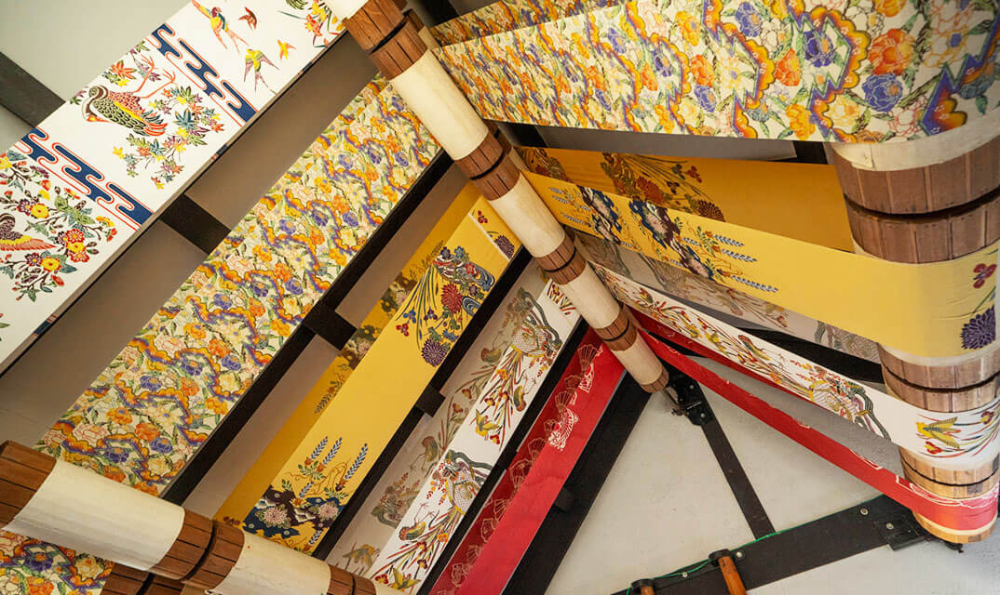
私たちのチームには「色彩アドバイザー」や「心理アドバイザー」の資格を持つメンバーがおり、色彩の持つ力を活かして、より良い空間作りを提案しています。このような取り組みは、住まいの質を高めるエスコンのライフデベロッパーとしての姿勢と深く共鳴するものがあります。色を通じて、私たちは空間に新たな価値を提供し続けたいと考えています。
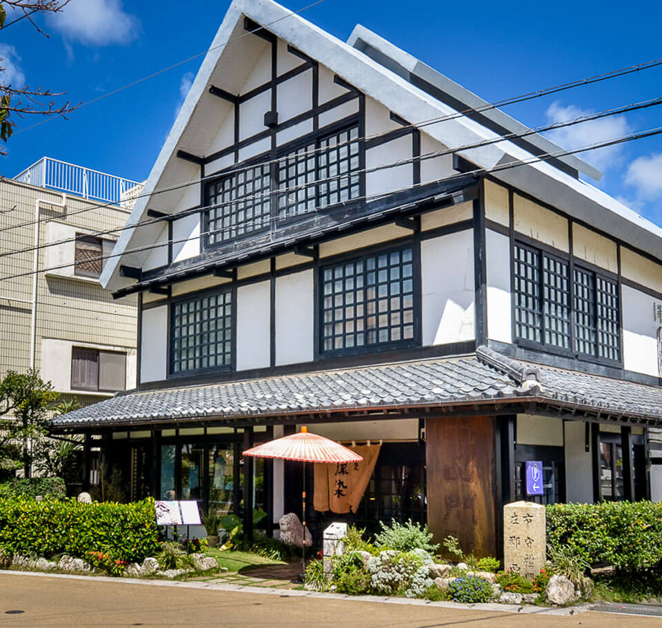

New Release in Okinawa Area

エスコン
那覇エリアにおける新規取得事業用地
（仮称）那覇市壷川プロジェクト
（仮称）那覇市安里プロジェクト
会員様には、最新情報や
特別な商談機会をいち早くお届けします。
※掲載のクラフトマンの写真・映像、記事は、2024年8月に取材撮影したものです。 ※掲載の地図は略図のため、省略されて表現されています。